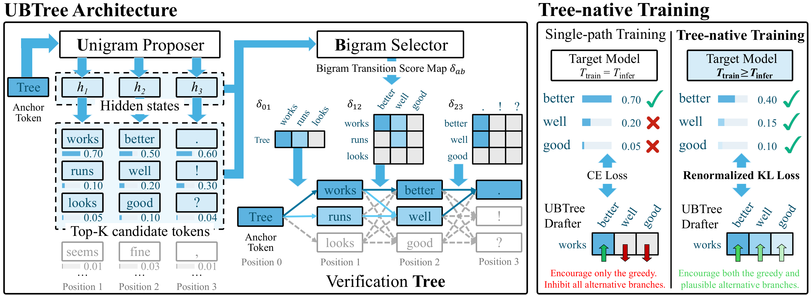

UBTree
Parallel tree drafting via Unigram and Bigram models for speculative decoding
1Inclusion AI · 2University of Illinois Urbana-Champaign · 3Purdue University
*Equal contribution †Corresponding authors
Parallel drafters such as DFlash propose a whole block of draft tokens in one forward pass, but they commit to a single draft path. When the target distribution has high entropy, that path often diverges early and the rest of the block is wasted. UBTree keeps drafting fully parallel while covering many plausible continuations. A unigram proposer suggests top-K candidates for every position at once, a lightweight bigram selector scores every adjacent candidate pair at once, and a cheap search turns those scores into a verification tree. A tree-native training recipe, combining high-temperature targets with a renormalized KL objective, teaches the selector to rank plausible alternative branches rather than only the greedy one.
The result is a lossless 5.84–6.94× average speedup on Qwen3-4B and Qwen3-8B, and 5.36× on the 124B Ling3-Flash served in SGLang.
See it decode#
Serve UBTree with SGLang#
The draft checkpoints run next to their Ling-3.0 target model. You only need to change the speculative-decoding flags at launch.
asahi/ubtree SGLang branch. Upstream integration is in progress in sgl-project/sglang#44050.Install the SGLang branch
Requires Python 3.11+ and a CUDA environment.
git clone -b asahi/ubtree https://github.com/AsaHIXx/sglang.git
cd sglang
pip install --upgrade pip
pip install -e "python"Download target + draft
hf download inclusionAI/Ling-3.0-flash --local-dir /path/to/ling3-flash
hf download inclusionAI/Ling-3.0-flash-UBTree --local-dir /path/to/ling3-flash-ubtreeLaunch the server
This is the batch-size-1 benchmark configuration from the model card. --speculative-num-draft-tokens sets the verification-tree size.
CUDA_VISIBLE_DEVICES=0,1,2,3 \
SGLANG_OPT_FA3_VERIFY_METADATA_IN_GRAPH=1 \
SGLANG_OPT_UBTREE_FA3_TREE_ONLY_MASK=1 \
python -m sglang.launch_server \
--model-path /path/to/ling3-flash \
--served-model-name ling3-flash \
--tp-size 4 \
--host 0.0.0.0 \
--port 30000 \
--attention-backend fa3 \
--page-size 1 \
--context-length 4096 \
--max-total-tokens 4096 \
--max-running-requests 1 \
--mem-fraction-static 0.80 \
--max-prefill-tokens 4096 \
--chunked-prefill-size 4096 \
--disable-radix-cache \
--mamba-backend triton \
--linear-attn-backend triton \
--linear-attn-verify-backend triton \
--mamba-ssm-dtype float32 \
--cuda-graph-backend-prefill disabled \
--cuda-graph-backend-decode full \
--cuda-graph-bs-decode 1 \
--disable-cuda-graph-padding \
--tool-call-parser ling3 \
--reasoning-parser ling3 \
--trust-remote-code \
--speculative-algorithm UBTREE \
--speculative-draft-model-path /path/to/ling3-flash-ubtree \
--speculative-num-draft-tokens 32Send a request
curl http://localhost:30000/v1/chat/completions \
-H "Content-Type: application/json" \
-d '{
"model": "ling3-flash",
"messages": [{"role": "user", "content": "Prove that the square root of 2 is irrational."}],
"max_tokens": 1024,
"temperature": 0
}'Install & download
git clone -b asahi/ubtree https://github.com/AsaHIXx/sglang.git
cd sglang
pip install --upgrade pip
pip install -e "python"
hf download inclusionAI/Ling-3.0-tiny --local-dir /path/to/ling3-tiny
hf download inclusionAI/Ling-3.0-tiny-UBTree --local-dir /path/to/ling3-tiny-ubtreeLaunch on a single GPU
Same flags as the flash model, with --tp-size 1 and a 49-node verification tree.
CUDA_VISIBLE_DEVICES=0 \
SGLANG_OPT_FA3_VERIFY_METADATA_IN_GRAPH=1 \
SGLANG_OPT_UBTREE_FA3_TREE_ONLY_MASK=1 \
python -m sglang.launch_server \
--model-path /path/to/ling3-tiny \
--served-model-name ling3-tiny \
--tp-size 1 \
--host 0.0.0.0 \
--port 30000 \
--attention-backend fa3 \
--page-size 1 \
--context-length 4096 \
--max-total-tokens 4096 \
--max-running-requests 1 \
--mem-fraction-static 0.80 \
--max-prefill-tokens 4096 \
--chunked-prefill-size 4096 \
--disable-radix-cache \
--mamba-backend triton \
--linear-attn-backend triton \
--linear-attn-verify-backend triton \
--mamba-ssm-dtype float32 \
--cuda-graph-backend-prefill disabled \
--cuda-graph-backend-decode full \
--cuda-graph-bs-decode 1 \
--disable-cuda-graph-padding \
--tool-call-parser ling3 \
--reasoning-parser ling3 \
--trust-remote-code \
--speculative-algorithm UBTREE \
--speculative-draft-model-path /path/to/ling3-tiny-ubtree \
--speculative-num-draft-tokens 49Parallel drafters need more than one path#
Block-parallel drafters such as DFlash predict an entire block of future tokens in a single forward pass, which hides most of the drafting latency. But they send the target model a single draft path. When the target is uncertain (sampling at temperature 1, reasoning traces, long agentic contexts), that path diverges early and everything after the divergence is wasted.
Recent work makes that single path more accurate, using lightweight autoregressive correction heads (Domino, DSpark) or intra-backbone designs (DFlash 2), but the target still verifies only one path per round. Tree drafting adds coverage: methods such as SpecInfer, Medusa and EAGLE-2 verify many branches in one target pass, so the accepted continuation need not be the drafter's top-1.
DDTree and DARTree bring tree drafting to block-parallel drafters, but two limitations remain:
- Dependency vs. parallelism. DARTree restores token dependencies with an autoregressive correction head, which serializes drafting across depths. DDTree stays fully parallel but ignores token dependencies, which limits acceptance length.
- Train–inference mismatch. Both reuse drafters trained for single-path drafting to rank the alternative branches of a tree, although those drafters were never optimized to propose plausible alternatives.
UBTree addresses both: bigram dependencies scored fully in parallel, and tree-native training.
Single path
UBTree
Average acceptance length τ on Qwen3-8B (instruct), DFlash (block 16) vs. UBTree (64-node tree). UBTree's unigram proposer is itself a DFlash backbone.
Propose in parallel, select in parallel, then build the tree#
All neural computation happens in two parallel forwards. The only sequential step, tree search, runs on precomputed scores and requires no further neural computation.

Unigram proposer
A DFlash backbone, conditioned on target hidden features, predicts every position of a γ-token block in one forward. The top-K tokens per position form candidate sets C1, …, Cγ, which contain Kγ possible paths.
⫴ one parallel forwardBigram selector
Scores every predecessor→successor pair δi(a,b) from the proposer hidden state, using deep codebooks (MLPs over frozen target embeddings) and learned depth calibration. All K + (γ−1)K2 edges are scored at once.
⫴ one batched matmulTree construction & verification
Normalized edge scores are accumulated into path log-probabilities. A depth-wise beam (width W) plus global pruning keeps the best B nodes. The target verifies the whole tree in one pass with tree attention and commits the longest accepted branch.
↳ no neural computation · losslessThe bigram selector#
UBTree builds on DFlash 2's low-rank selector and makes two changes. The codebooks φ, ψ that embed predecessor and successor tokens are derived from the frozen target embeddings through two bias-free MLPs. They are precomputed into a vocabulary-wide lookup table, so inference cost stays the same. The combination weights of proposer logits and selector scores are learned per depth, because the reliability of each signal varies with depth.
For a depth i, the full score matrix between the candidates at depth i−1 and depth i is a single diagonal-weighted matmul:
Tree-native training#
A tree is only as good as its second-best branches. Standard drafter training (cross-entropy on rollouts at the inference temperature) rewards the greedy token and pushes every alternative down, including the plausible ones the tree wants to keep.
UBTree changes two things:
- High-temperature targets. Training data is regenerated at Ttrain ≥ Tinfer, which spreads supervision over plausible alternatives. A single checkpoint trained at Ttrain=1 serves both Tinfer=0 and 1.
- Renormalized KL. The selector matches the target distribution renormalized over the proposer's top-K support, rather than a hard label. A small auxiliary cross-entropy term on the proposer (β = 0.1) preserves its candidate distribution.
Tree verification on hybrid-attention models#
Both production targets use hybrid attention: Ling3-Flash with Kimi Delta Attention layers and Qwen3.8-27B with Gated DeltaNet layers. Linear-attention layers carry a recurrent state rather than a per-token KV cache, so in our SGLang implementation each tree node inherits the recurrent and convolution states of its parent during verification. Only the states and KV entries along the accepted path are committed, which keeps verification lossless for these architectures.
Faster at every scale we tried#
Speedup is end-to-end decoding speedup over target-only autoregressive decoding. τ is the average number of tokens accepted per verification round, including the bonus token.
Academic benchmarks#
Qwen3 targets · batch size 1 · Transformers backend · tree budget B=64, W=12, K=64. Domino numbers are paper-reported.
Full table for this setting
- Average speedup of 6.88× / 6.94× on Qwen3-4B / 8B with greedy decoding and 6.00× / 5.84× at temperature 1. UBTree beats DARTree in all 28 benchmark settings and improves average speedup over it by 7.4–13.4%.
- With thinking enabled on Qwen3-4B, UBTree is 25.3% / 29.9% faster than DDTree at T = 0 / 1. The gap is largest at high temperature.
Concurrent serving in SGLang#
SGLang · BF16 · CUDA Graphs · T = 1. Tree methods use load-adaptive budgets B/W. Bars show output tokens/s; labels show speedup over AR at the same concurrency.
- Highest throughput at every concurrency level, 7.0–16.3% ahead of the next-best method. At C = 32, UBTree is still 7.3–7.7% ahead of the strongest single-path drafter, while DDTree falls behind.
Production-scale models#
SGLang · TP4 · batch size 1 · thinking disabled. Cells show speedup with τ in grey.
- Highest acceptance length in 14/14 model–benchmark pairs and highest speedup in 12/14. Average speedup 5.36× on Ling3-Flash (124B-A5.1B MoE) and 4.78× on Qwen3.8-27B, both hybrid-attention architectures.
Long context and agentic traces#
- UBTree has the highest τ in every context bin: +34.6–42.1% over DSpark on LongBench-v2 and +29.0–37.8% on SWE-bench. At 192–260K prompt tokens it still accepts 5.80 tokens per round, about the same as for the shortest prompts.
Where the time goes#
A parallel selector also makes drafting cheaper. On Qwen3-4B / GSM8K, UBTree cuts draft post-processing (LM head, candidate selection, selector scoring and tree construction) from 3.36 ms to 1.38 ms per round (−58.8%) compared with DARTree's autoregressive correction head. It also reaches a slightly higher τ (12.58 vs. 12.50), which brings time per output token from 2.41 to 2.21 ms.
Ablations#
Qwen3-4B instruct · averages over 7 benchmarks.
| Selector & training (Tinfer = 0) | Speedup | τ |
|---|---|---|
| DFlash 2 selector + tree | 5.95× | 8.82 |
| UBTree selector + tree | 6.57× | 9.86 |
| + Ttrain = 1 (full UBTree) | 6.88× | 10.23 |
| Objective | β | T=0 speedup / τ | T=1 speedup / τ |
|---|---|---|---|
| Hard-label CE | 0.1 | 6.84× / 10.08 | 5.99× / 8.93 |
| Renormalized KL | 0.1 | 6.88× / 10.23 | 6.00× / 9.01 |
| Renormalized KL | 0 | 6.87× / 10.14 | 6.01× / 9.01 |
A training-temperature sweep over Ttrain ∈ {0.8, 1.0, 1.1, 1.2} gives the best average τ at Ttrain = 1.0 for both inference temperatures (10.23 at T = 0, 9.01 at T = 1).
Released checkpoints#
Draft models for the Ling-3.0 family, on Hugging Face under the MIT license. Each one shares token embeddings and the LM head with its target.
*Mean over the six benchmarks in the table above, as reported on the model cards: SGLang, block size 16, concurrency 1, BF16, greedy decoding with thinking disabled, and a 32-node (flash) or 49-node (tiny) verification tree. Cells show τ / end-to-end speedup over target-only autoregressive decoding. This serving setup differs from the paper's production experiments (64-node tree), so the numbers are not directly comparable.
Cite UBTree#
@article{liang2026ubtree,
title = {UBTree: Parallel Tree Drafting via Unigram and Bigram Models for Speculative Decoding},
author = {Liang, Chumeng and Wang, Linxuan and Peng, Xinyu and Liu, Huabin and Guo, Xiaoxu and Chen, Yuxin and Liu, Ge and Lin, Guang and Song, Qifan and Li, Jianguo},
journal = {arXiv preprint arXiv:2609.39972},
year = {2026},
url = {https://arxiv.org/abs/2609.39972}
}